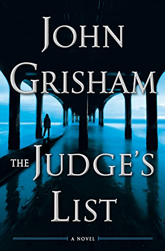
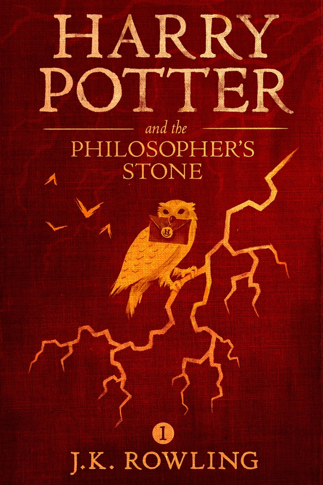

JOHN GRISHAM
In The Whistler, Lacy Stoltz investigated a corrupt judge who was taking millions in bribes from a crime syndicate. She put the criminals away, but only after being attacked and nearly killed. Three years later, and approaching forty, she is tired of her work for the Florida Board on Judicial Conduct and ready for a change.

ANDRZEJ SAPKOW
Geralt the Witcher—revered and hated—is a man whose magic powers, enhanced by long training and a mysterious elixir, have made him a brilliant fighter and a merciless assassin. Yet he is no ordinary murderer: his targets are the multifarious monsters and vile fiends that ravage the land and attack the innocent.
GREER HENDRICKS
Shay Miller wants to find love, but it eludes her. She wants to be fulfilled, but her job is a dead end. She wants to belong, but her life is increasingly lonely.
Until Shay meets the Moore sisters. Cassandra and Jane live a life of glamorous perfection, and always get what they desire. When they invite Shay into their circle, everything seems to get better

JK ROULING
The Harry Potter Prequel is an 800-word story written by J. K. Rowling, and was published online on June 11th, 2008. Set three years before the birth of Harry Potter, the story recounts an adventure had by Sirius Black and James Potter.